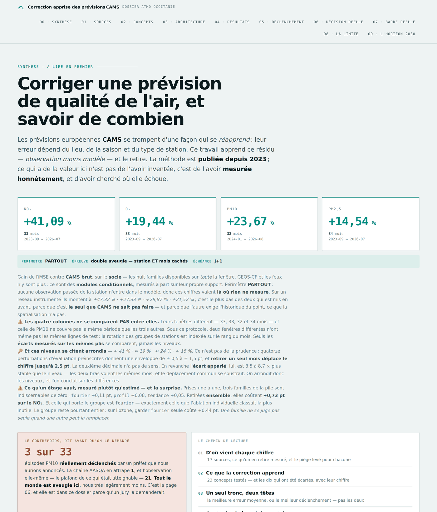
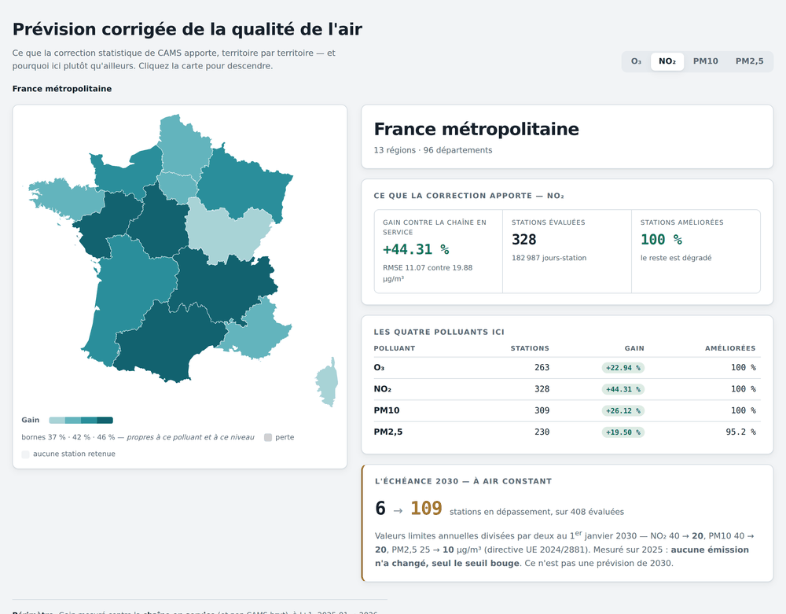
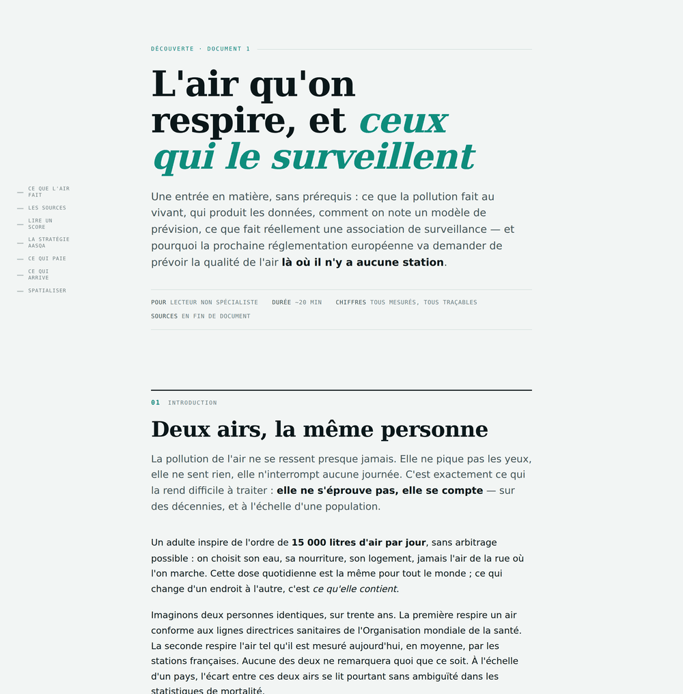
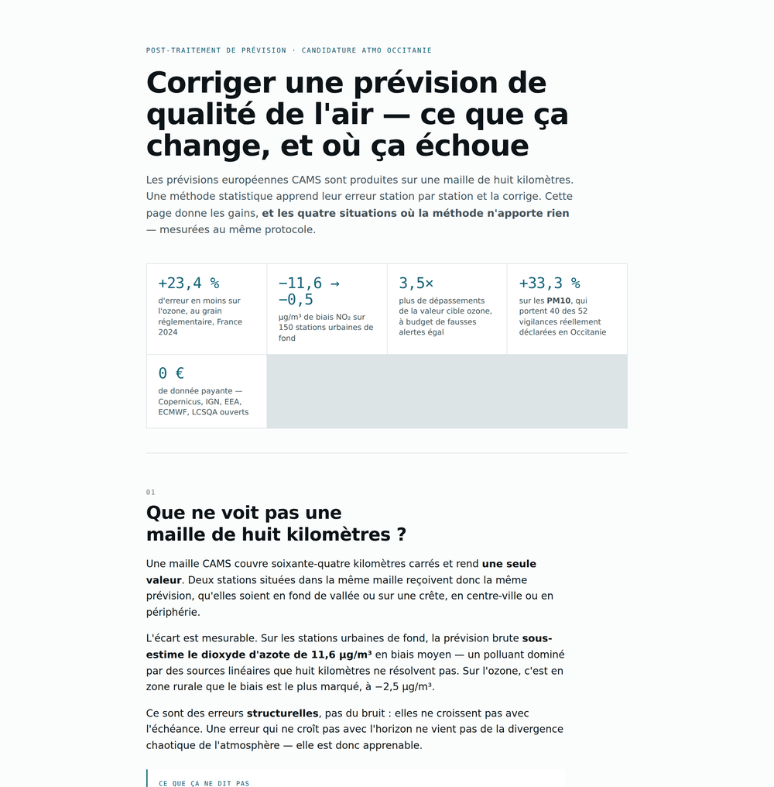

Corriger une prévision de qualité de l'air, et savoir de combien
Les prévisions européennes CAMS se trompent d'une façon qui se réapprend. Ce projet apprend la correction observation moins CAMS aux stations françaises, sur 36 mois et quatre polluants, évaluée avec station et mois cachés ensemble, la condition d'un déploiement réel. Quatre présentations, selon ce que vous cherchez :

Le dossier complet
Chaque source analysée, ce que la correction apprend et ce qu'elle refuse d'apprendre, la composition retenue, l'architecture, les résultats contre la chaîne réglementaire année par année, et les cas où elle nuit.
Ouvrir le dossier →
La carte par territoire
Le gain de la correction région par région et département par département, pour l'ozone, le NO₂, les PM10 et les PM2,5.
Explorer la carte →
Découverte, sans prérequis
Les polluants, les acteurs, la notation d'un modèle, l'empilement des données source par source, et ce qui a été testé sans rien donner.
Lire la découverte →
Le dossier pour une AASQA
Ce que la correction change pour une association de surveillance, où elle échoue, et ce qu'il faudrait pour l'exploiter.
Lire le dossier →Code, protocole et chiffres régénérables : github.com/cyril-bgs-dev-tech/correction-previsions-qualite-air. Projet indépendant de Cyril Bourgeois.